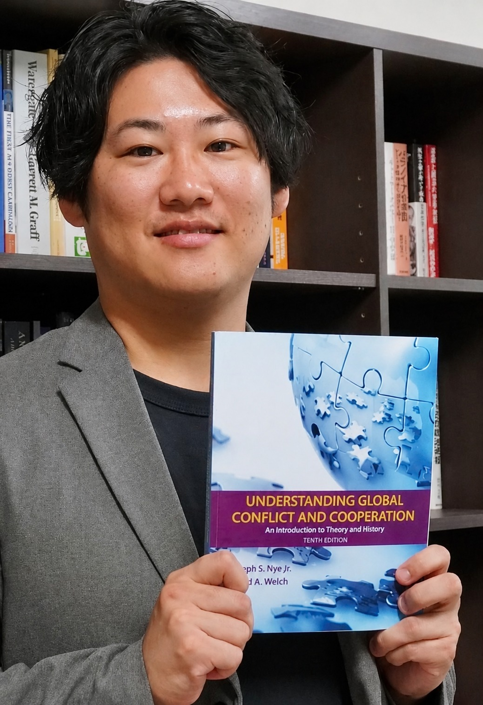

専門は国際政治学で、なかでもアメリカ政治外交史、国際安全保障論、日米関係史を主に研究しています。具体的には、これまで核兵器をめぐる日米関係に着目し、唯一の戦争被爆国でありながら、同盟国としてアメリカの「核の傘」に依存する日本は、戦後どのように抑止と軍縮の狭間で行動してきたのか。そしてそれをアメリカはどのように受容し、自国の外交政策に位置づけたのか。こうした問題意識をもとに研究を進めてきました。最終的には、戦後の日米関係における核兵器の意味合いを明らかにすることを目指しています。
日本を取り巻く安全保障環境が戦後最も厳しいとされる現在、核兵器をめぐる問題もかつてないほど議論されるようになっています。イメージや規範的ロジックではなく、一次資料に基づいた実証を通じて、広く議論するための土台を提供する政策的・社会的な貢献も強く意識しています。
また最近は、人口変動・高齢化・世代交代がアメリカの同盟システム（特に日米同盟）に与える影響についても関心を持っています。
実態を踏まえた平和教育の開発
政策・意思決定支援
国際政治のリスク分析
記憶と記録のアーカイブ構築
安全保障問題は、すべての生活の基礎です。国際政治の話題は東京中心に語られがちですが、その影響は地方の生活にも直結していますし、これからの世代の問題もあります。一当事者として、過剰に恐れたり過度に楽観的になったりするのではなく、時代との正しい向き合い方を持ってもらえるよう、エビデンスに基づく専門的な知見から具体的な連携・協力が可能です。

国際政治・日米関係・安全保障・平和教育に関するご相談を承っています。